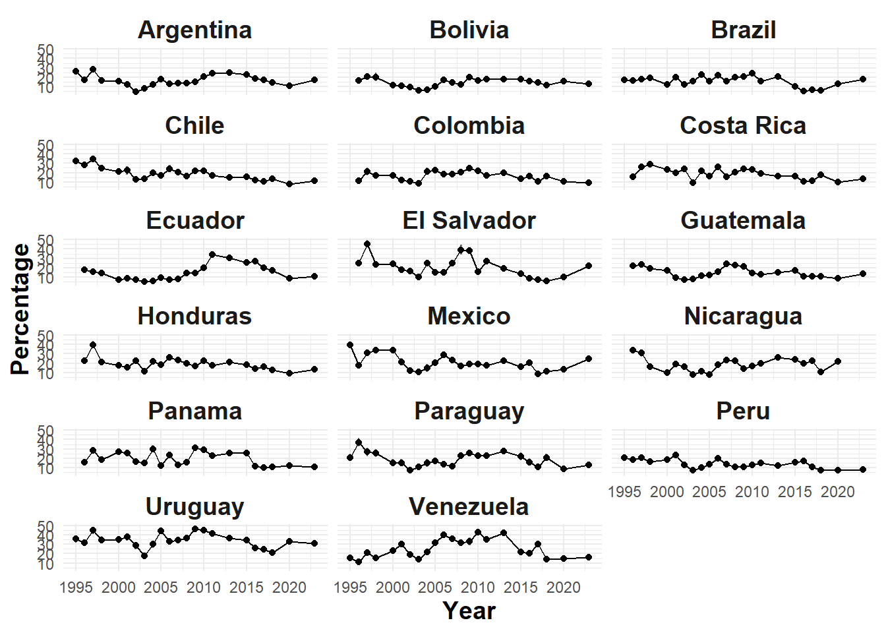

# l1995 <- read_dta("input/data/latinobar/1995.dta", encoding = "UTF-8")
# l1996 <- read_dta("input/data/latinobar/1996.dta", encoding = "UTF-8")
# l1997 <- read_dta("input/data/latinobar/1997.dta", encoding = "UTF-8")
# l1998 <- read_dta("input/data/latinobar/1998.dta", encoding = "UTF-8")
# l2000 <- read_dta("input/data/latinobar/2000.dta", encoding = "UTF-8")
# l2001 <- read_dta("input/data/latinobar/2001.dta", encoding = "UTF-8")
# l2002 <- read_dta("input/data/latinobar/2002.dta", encoding = "UTF-8")
# l2003 <- read_dta("input/data/latinobar/2003.dta", encoding = "UTF-8")
# l2004 <- read_dta("input/data/latinobar/2004.dta", encoding = "UTF-8")
# l2005 <- read_dta("input/data/latinobar/2005.dta", encoding = "UTF-8")
# l2006 <- read_dta("input/data/latinobar/2006.dta", encoding = "UTF-8")
# l2007 <- read_dta("input/data/latinobar/2007.dta", encoding = "UTF-8")
# l2008 <- read_dta("input/data/latinobar/2008.dta", encoding = "UTF-8")
# l2009 <- read_dta("input/data/latinobar/2009.dta", encoding = "UTF-8")
# l2010 <- read_dta("input/data/latinobar/2010.dta", encoding = "UTF-8")
# l2011 <- read_dta("input/data/latinobar/2011.dta")
# l2013 <- read_dta("input/data/latinobar/2013.dta", encoding = "UTF-8")
# l2015 <- read_dta("input/data/latinobar/2015.dta", encoding = "UTF-8")
# l2016 <- read_dta("input/data/latinobar/2016.dta", encoding = "UTF-8")
# l2017 <- read_dta("input/data/latinobar/2017.dta", encoding = "UTF-8")
# l2018 <- read_dta("input/data/latinobar/2018.dta", encoding = "UTF-8")
# l2020 <- read_dta("input/data/latinobar/2020.dta", encoding = "UTF-8")
# l2023 <- read_dta("input/data/latinobar/2023.dta", encoding = "UTF-8")5 Proc y Análisis Data Latinobarómetro
5.1 Cargar datos
# Crear vector de años
anios <- c(1995:1998, 2000:2011, 2013, 2015:2018, 2020, 2023) # listado de años
# Crear función para importar cada archivo
leer_archivo <- function(anio) { # crear función que permitirá automatizar la carga de datos, usa año
path <- paste0("input/data/latinobar/", anio, ".dta") # indicar el path general
if (anio == 2011) {
haven::read_dta(path) # importar datos para 2011, excpeción pq no tiene encoding
} else {
haven::read_dta(path, encoding = "UTF-8") # importar datos para el resto de años, con encoding utf-8
}
}
# Aplicar la función para importar datos a todos los años
latinobar_list <- lapply(anios, leer_archivo) # lapply aplica la función: guarda el resultado dentro de una lista de data.frames
# latinobar_list[[1]] # primera base (1995)
# Asignar nombres a cada elemento de la lista
names(latinobar_list) <- paste0("l", anios) # le pone nombre a las bases dentro de la lista, para no llamarlos por indexación
# latinobar_list[["l1995"]] # base (1995)5.2 Procesar
5.2.1 Seleccionar y renombrar variables
# # 1995
# l1995 = l1995 %>%
# select(pais,
# ano = numero,
# id = enc,
# exp = wt,
# trust_ppol = p27j)
#
# # 1996
# l1996 = l1996 %>%
# select(pais,
# ano = numero,
# id = enc,
# exp = wt,
# trust_ppol = p33j)
#
# # 1997
# l1997 = l1997 %>%
# select(pais = idenpa,
# ano = numinves,
# id = numentre,
# exp = wt,
# trust_ppol = sp63g)
#
# # 1998
# l1998 = l1998 %>%
# select(pais = idenpa,
# ano = numinves,
# id = numentre,
# exp = pondera,
# trust_ppol = sp38g)
#
# # 2000
# l2000 = l2000 %>%
# select(pais = idenpa,
# ano = numinves,
# id = numentre,
# exp = wt,
# trust_ppol = P35ST_G)
#
# # 2001
# l2001 = l2001 %>%
# select(pais = idenpa,
# ano = numinves,
# id = numentre,
# exp = wt,
# trust_ppol = p61stg)
#
# # 2002
# l2002 = l2002 %>%
# select(pais = idenpa,
# ano = numinves,
# id = numentre,
# exp = wt,
# trust_ppol = p34stf)
#
# # 2003
# l2003 = l2003 %>%
# select(pais = idenpa,
# ano = numinves,
# id = numentre,
# exp = wt,
# trust_ppol = p21std)
#
# # 2004
# l2004 = l2004 %>%
# select(pais = idenpa,
# ano = numinves,
# id = numentre,
# exp = wt,
# trust_ppol = p34std)
#
# # 2005
# l2005 = l2005 %>%
# select(pais = idenpa,
# ano = numinves,
# id = numentre,
# exp = wt,
# trust_ppol = p47stb)
#
# # 2006
# l2006 = l2006 %>%
# select(pais = idenpa,
# ano = numinves,
# id = numentre,
# exp = wt,
# trust_ppol = p24st_c)
#
# # 2007
# l2007 = l2007 %>%
# select(pais = idenpa,
# ano = numinves,
# id = numentre,
# exp = wt,
# trust_ppol = p27st_e)
#
# # 2008
# l2008 = l2008 %>%
# select(pais = idenpa,
# ano = numinves,
# id = numentre,
# exp = wt,
# trust_ppol = p28st_c)
#
# # 2009
# l2009 = l2009 %>%
# select(pais = idenpa,
# ano = numinves,
# id = numentre,
# exp = wt,
# trust_ppol = p26st_c)
#
# # 2010
# l2010 = l2010 %>%
# select(pais = idenpa,
# ano = numinves,
# id = numentre,
# exp = wt,
# trust_ppol = P20ST_C)
#
# # 2011
# l2011 = l2011 %>%
# select(pais = idenpa,
# ano = numinves,
# id = numentre,
# exp = wt,
# trust_ppol = P22ST_C)
#
# # 2013
# l2013 = l2013 %>%
# select(pais = idenpa,
# ano = numinves,
# id = numentre,
# exp = wt,
# trust_ppol = P26TGB_G)
#
# l2015 = l2015 %>%
# select(pais = idenpa,
# ano = numinves,
# id = numentre,
# exp = wt,
# trust_ppol = P19ST_C)
#
# # 2016
# l2016 = l2016 %>%
# select(pais = idenpa,
# ano = numinves,
# id = numentre,
# exp = wt,
# trust_ppol = P13STG)
#
# # 2017
# l2017 = l2017 %>%
# select(pais = idenpa,
# ano = numinves,
# id = numentre,
# exp = wt,
# trust_ppol = P14ST_G)
#
# # 2018
# l2018 = l2018 %>%
# select(pais = IDENPA,
# ano = NUMINVES,
# id = NUMENTRE,
# exp = WT,
# trust_ppol = P15STGBSC.G)
#
# # 2020
# l2020 = l2020 %>%
# select(pais = idenpa,
# ano = numinves,
# id = numentre,
# exp = wt,
# trust_ppol = p13st_g)
#
# # 2023
# l2023 = l2023 %>%
# select(pais = idenpa,
# ano = numinves,
# id = numentre,
# exp = wt,
# trust_ppol = P13ST_G)# Crear tabla con nombres originales de las variables por año
meta_vars <- tribble(
~anio, ~pais_var, ~anio_var, ~id_var, ~exp_var, ~trust_var,
1995, "pais", "numero", "enc", "wt", "p27j",
1996, "pais", "numero", "enc", "wt", "p33j",
1997, "idenpa", "numinves", "numentre", "wt", "sp63g",
1998, "idenpa", "numinves", "numentre", "pondera","sp38g",
2000, "idenpa", "numinves", "numentre", "wt", "P35ST_G",
2001, "idenpa", "numinves", "numentre", "wt", "p61stg",
2002, "idenpa", "numinves", "numentre", "wt", "p34stf",
2003, "idenpa", "numinves", "numentre", "wt", "p21std",
2004, "idenpa", "numinves", "numentre", "wt", "p34std",
2005, "idenpa", "numinves", "numentre", "wt", "p47stb",
2006, "idenpa", "numinves", "numentre", "wt", "p24st_c",
2007, "idenpa", "numinves", "numentre", "wt", "p27st_e",
2008, "idenpa", "numinves", "numentre", "wt", "p28st_c",
2009, "idenpa", "numinves", "numentre", "wt", "p26st_c",
2010, "idenpa", "numinves", "numentre", "wt", "P20ST_C",
2011, "idenpa", "numinves", "numentre", "wt", "P22ST_C",
2013, "idenpa", "numinves", "numentre", "wt", "P26TGB_G",
2015, "idenpa", "numinves", "numentre", "wt", "P19ST_C",
2016, "idenpa", "numinves", "numentre", "wt", "P13STG",
2017, "idenpa", "numinves", "numentre", "wt", "P14ST_G",
2018, "IDENPA", "NUMINVES", "NUMENTRE", "WT", "P15STGBSC.G",
2020, "idenpa", "numinves", "numentre", "wt", "p13st_g",
2023, "idenpa", "numinves", "numentre", "wt", "P13ST_G"
)
# Crear función para estandarizar nombres de variables
estandarizar_latinobar <- function(data, anio, meta) {
row <- meta %>% filter(anio == !!anio) # filtra la fila correspondiente al año, saca las demás
data %>% # se mete a la base y renombra las columnas
select(
pais = all_of(row$pais_var),
anio = all_of(row$anio_var),
id = all_of(row$id_var),
exp = all_of(row$exp_var),
trust_ppol = all_of(row$trust_var)
)
}
# Aplicar funcion para estandarizar nombres de variables a toda la lista de bases
latinobar_list_std <- mapply( # aplica una función a dos o más vectores en paralelo (data y anio), genera una lista
estandarizar_latinobar,
data = latinobar_list, # vector de entrada 1: va pasando una base de la lista
anio = anios, # vector de entrada 2: va pasando los años
MoreArgs = list(meta = meta_vars), # le pasa la tabla meta_vars como argumento constante
SIMPLIFY = FALSE # asegura que el resultado sea una lista, no un array o matriz.
)5.2.2 Limpiar
latinobar_list_std <- map(latinobar_list_std, ~ .x %>%
mutate(across(everything(), ~ ifelse(as.numeric(.) %in% -7:-1, NA, as.numeric(.)))))5.2.3 Unir
latinobar_full <- bind_rows(latinobar_list_std)5.2.4 Reordenar
latinobar_full <- latinobar_full %>%
select(pais, anio, id, exp, trust_ppol)5.2.5 Limpiar entorno
rm(list = setdiff(ls(), "latinobar_full")) # Elimina todo lo que esté en ls() excepto lo que se llama latinobar_full5.2.6 Recodificar
latinobar_full <- latinobar_full %>%
mutate(
pais = recode(pais,
`32` = "Argentina",
`68` = "Bolivia",
`76` = "Brazil",
`152` = "Chile",
`170` = "Colombia",
`188` = "Costa Rica",
`214` = "Rep. Dominicana",
`218` = "Ecuador",
`222` = "El Salvador",
`320` = "Guatemala",
`340` = "Honduras",
`484` = "Mexico",
`558` = "Nicaragua",
`591` = "Panama",
`600` = "Paraguay",
`604` = "Peru",
`724` = "España",
`858` = "Uruguay",
`862` = "Venezuela"
),
anio = recode(anio,
`16` = 2011,
`17` = 2013,
`18` = 2015,
`23` = 2023,
.default = anio # conserva el resto de los años sin cambio
) %>% as.numeric(),
trust_ppol_rec = if_else(trust_ppol %in% c(1, 2), 1, 0)
)5.3 Graficar
5.3.1 Base para gráfico
# Eliminar NA y crear base nueva
latinobar_confianza <- latinobar_full %>%
filter(!is.na(trust_ppol_rec))%>% # Solo casos válidos para confianza
mutate(
pais = as.character(pais), # Asegura que no haya factores con etiquetas
anio = as.numeric(anio), # Por si quedó con etiquetas
trust_ppol_rec = as.numeric(trust_ppol_rec) # Asegura formato 0/1
)5.3.2 Diseño survey
# Crear diseño de encuesta con ponderador
design <- svydesign(
ids = ~1,
data = latinobar_confianza,
weights = ~exp) # agregar los pesos5.3.3 Calcular Proporción Confianza
# Calcular proporción de confianza y guardar resultado de svyby()
resultado_bruto <- svyby(
~ trust_ppol_rec,
~ pais + anio,
design,
svymean,
na.rm = TRUE
)
# Armar tabla
porcentaje_confianza <- resultado_bruto %>%
as_tibble() %>%
transmute(
pais,
anio,
confianza = trust_ppol_rec, # proporción (0 a 1)
se = se, # error estándar
porcentaje = confianza * 100, # para visualización
porcentaje_inf = (confianza - 1.96 * se) * 100, # IC 95% inferior
porcentaje_sup = (confianza + 1.96 * se) * 100 # IC 95% superior
) %>%
filter(!pais %in% c("España", "Rep. Dominicana")) 5.3.4 Plot
ggplot(porcentaje_confianza, aes(x = anio, y = porcentaje)) +
geom_line() +
geom_point() +
geom_errorbar(aes(ymin = porcentaje_inf, ymax = porcentaje_sup), width = 0.2, alpha = 0.5) +
facet_wrap(~ pais, ncol = 3) +
labs(x = "Year", y = "Percentage") +
theme_minimal() +
theme(strip.text = element_text(size = 14, face = "bold"),
axis.title.x = element_text(size = 14, face = "bold"),
axis.title.y = element_text(size = 14, face = "bold"))
ggsave("output/graph_trust_political_parties.png", width = 10, height = 12)saveRDS(latinobar_full, "output/latinobar_confianza_ppol.rds")